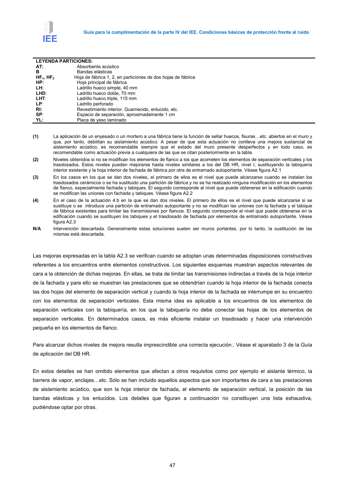

GUIA · Página 57 · versión 2016-11-01
SHA256: 813669d3066c0ff79457d57b80b0512a4fbb248bc5db1f7baf473c369a064738 · página física 57 de 65 · métodos de encabezado
solo si están cotejados.
Formatos: Markdown · JSON de bloques · PDF p. 57 · imagen PNG
Guía para la cumplimentación de la parte IV del IEE. Condiciones básicas de protección frente al ruido 47 LEYENDA PARTICIONES: AT: Absorbente acústico B Bandas elásticas HF1, HF2 Hoja de fábrica 1, 2, en particiones de dos hojas de fábrica HP: Hoja principal de fábrica LH: Ladrillo hueco simple, 40 mm LHD: Ladrillo hueco doble, 70 mm LHT: Ladrillo hueco triple, 115 mm LP: Ladrillo perforado RI: Revestimiento interior. Guarnecido, enlucido, etc. SP: Espacio de separación, aproximadamente 1 cm YL: Placa de yeso laminado (1) La aplicación de un enyesado o un mortero a una fábrica tiene la función de sellar huecos, fisuras=etc. abiertos en el muro y que, por tanto, debilitan su aislamiento acústico. A pesar de que esta actuación no conlleva una mejora sustancial de aislamiento acústico, es recomendable siempre que el estado del muro presente desperfectos y en todo caso, es recomendable como actuación previa a cualquiera de las que se citan posteriormente en la tabla. (2) Niveles obtenidos si no se modifican los elementos de flanco a los que acometen los elementos de separación verticales y los trasdosados. Estos niveles pueden mejorarse hasta niveles similares a los del DB HR, nivel I, sustituyendo la tabiquería interior existente y la hoja interior de fachada de fábrica por otra de entramado autoportante. Véase figura A2.1 (3) En los casos en los que se dan dos niveles, el primero de ellos es el nivel que puede alcanzarse cuando se instalan los trasdosados cerámicos o se ha sustituido una partición de fábrica y no se ha realizado ninguna modificación en los elementos de flanco, especialmente fachada y tabiques. El segundo corresponde al nivel que puede obtenerse en la edificación cuando se modifican las uniones con fachada y tabiques. Véase figura A2.2 (4) En el caso de la actuación 4.b en la que se dan dos niveles. El primero de ellos es el nivel que puede alcanzarse si se sustituye o se introduce una partición de entramado autoportante y no se modifican las uniones con la fachada y el tabique de fábrica existentes para limitar las transmisiones por flancos. El segundo corresponde al nivel que puede obtenerse en la edificación cuando se sustituyen los tabiques y el trasdosado de fachada por elementos de entramado autoportante. Véase figura A2.3 N/A Intervención descartada. Generalmente estas soluciones suelen ser muros portantes, por lo tanto, la sustitución de las mismas está descartada. Las mejoras expresadas en la tabla A2.3 se verifican cuando se adoptan unas determinadas disposiciones constructivas referentes a los encuentros entre elementos constructivos. Los siguientes esquemas muestran aspectos relevantes de cara a la obtención de dichas mejoras. En ellas, se trata de limitar las transmisiones indirectas a través de la hoja interior de la fachada y para ello se muestran las prestaciones que se obtendrían cuando la hoja interior de la fachada conecta las dos hojas del elemento de separación vertical y cuando la hoja interior de la fachada se interrumpe en su encuentro con los elementos de separación verticales. Esta misma idea es aplicable a los encuentros de los elementos de separación verticales con la tabiquería, en los que la tabiquería no debe conectar las hojas de los elementos de separación verticales. En determinados casos, es más eficiente instalar un trasdosado y hacer una intervención pequeña en los elementos de flanco. Para alcanzar dichos niveles de mejora resulta imprescindible una correcta ejecución.. Véase el aparatado 3 de la Guía de aplicación del DB HR. En estos detalles se han omitido elementos que afectan a otros requisitos como por ejemplo el aislante térmico, la barrera de vapor, anclajes=etc. Sólo se han incluido aquellos aspectos que son importantes de cara a las prestaciones de aislamiento acústico, que son la hoja interior de fachada, el elemento de separación vertical, la posición de las bandas elásticas y los enlucidos. Los detalles que figuran a continuación no constituyen una lista exhaustiva, pudiéndose optar por otras.
